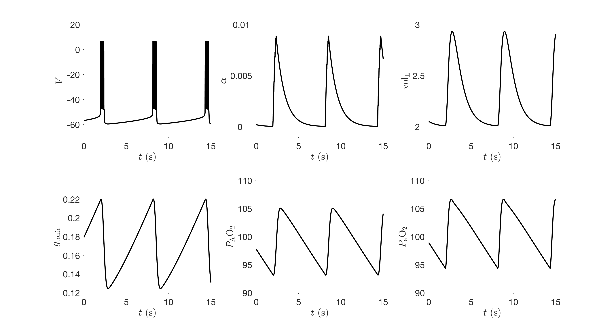
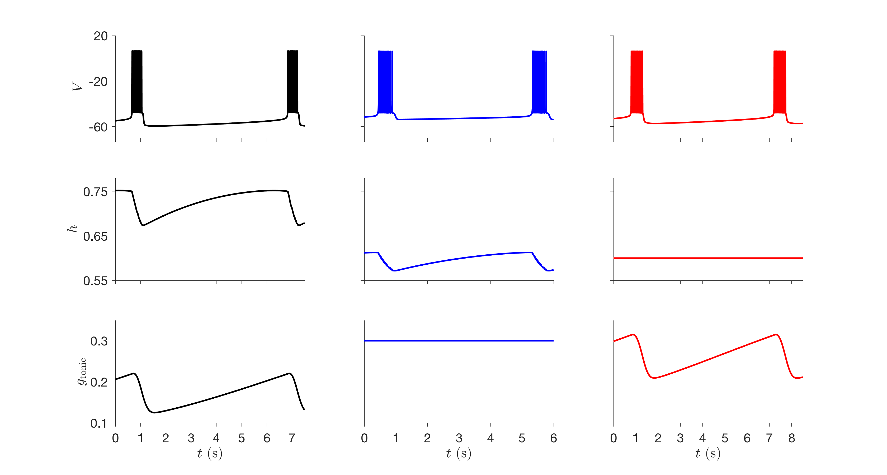

README file for code associated with the paper "Eupnea, Tachypnea, and Autoresuscitation in a Closed-Loop Respiratory Control Model" Diekman CO, Thomas PJ, and Wilson CG (2017). Journal of Neurophysiology doi: 10.1152/jn.00170.2017 This folder contains MATLAB and XPPAUT code for reproducing the figures in the paper. Estimated runtimes are for a standard laptop/desktop personal computer. Figure 1: 'reproduce_figure1.m' runs simulations and plots the figure shown below. Runtime: minutes  Figure 2: 'reproduce_figure2.m' runs simulations and plots the figure shown below. Runtime: minutes  Figure 3: 'reproduce_figure3.m' runs simulations and plots the figure. Runtime: hours Figure 4: 'reproduce_figure4.m' runs simulations, reads in pre-computed bifurcation curves, and plots the figure. Runtime: minutes To generate the bifurcation curves, use XPPAUT and follow the instructions in 'generate_figure4_bifurcation_curves.ode'. Figure 5: 'reproduce_figure5.m' runs simulations and plots the figure. Runtime: hours Figure 6: 'reproduce_figure6.m' runs simulations and plots the figure. Runtime: minutes Figure 7: 'reproduce_figure8.m' runs simulations and plots the figure. Runtime: hours Figure 8: 'reproduce_figure9.m' runs simulations and plots the figure. Runtime: hours Figure 9: 'reproduce_figure10.m' runs simulations and plots the figure. Runtime: minutes Figure 10: 'reproduce_figure10.m' runs simulations, reads in pre-computed bifurcation curves, and plots the figure. Runtime: minutes To generate the bifurcation curves, use XPPAUT and follow the instructions in 'generate_figure10_bifurcation_curves.ode'. Figure 11: No code provided since this figure displays experimental rather than computational data. Figure 12: 'reproduce_figure12.m' runs simulations and plots the figure. Note that the estimated location of the boundary limit cycle is sensitive to numerical precision and round-off error. If the figure looks different on your machine you may need to adjust the gtonic clamp duration "breakDur" to find values that lead to recovery (for panels A and C) and failure (panels B and D). Runtime: minutes Figure 13: 'reproduce_figure13.m' runs simulations and plots the figure. This figure involves simulating one period near the unstable boundary limit cycle to compute Floquet multipliers, and so is very sensitive to numerical precision and round-off error. Use 'reproduce_figure12.m' to find the breakDur values that put you close to the boundary limit cycle. For the breakDur value that leads to recovery in Figure 13, save the state variables "inits3" and then set those as "initsR" for Figure 13. Likewise set "initsF" in 'reproduce_figure13.m' to the state variables in "inits3" of 'reproduce_figure12.m' corresponding to the breakDur that leads to failure. Runtime: minutes Figure 14: 'reproduce_figure14.m' reads in pre-computed data files and plots the figure. Runtime: seconds. To run the simulations that produce the data files, use 'runsims_figure14.m'. Runtime: days Figure 15: 'reproduce_figure15.m' runs simulations and plots the figure. Similar to Figure 12, you may need to adjust "breakDur". Runtime: minutes Figure A1: 'reproduce_figure7.m' runs simulations and plots the figure. Runtime: minutes